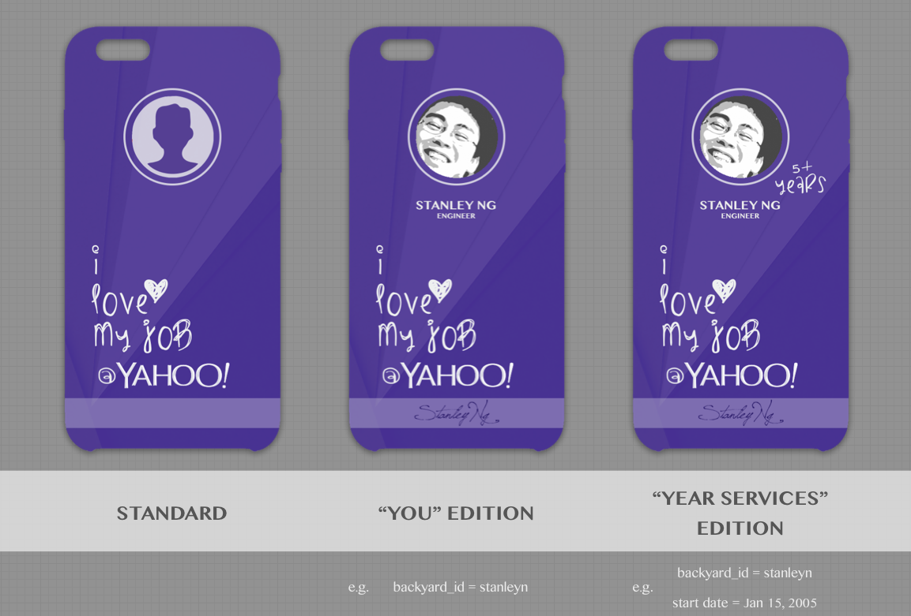

"I ❤ MY JOB @ YAHOO"
DESIGN DETAILS

Voting Steps
Visit
yo/designthecase-stanleyn
Select "Most Thumbs Up" option
Search "I ❤ MY JOB @ YAHOO" in page 1
Click "Thumbs Up" button
Observe the count increased by 1
Done!
Avatar
Name & Year of Service
Remark